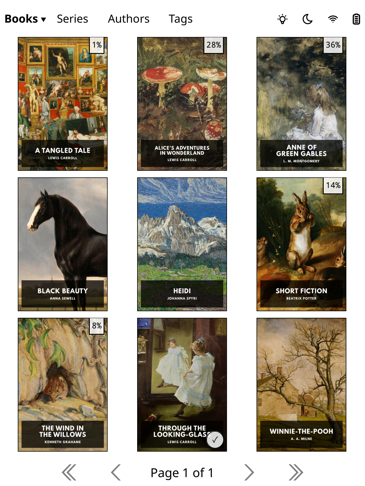
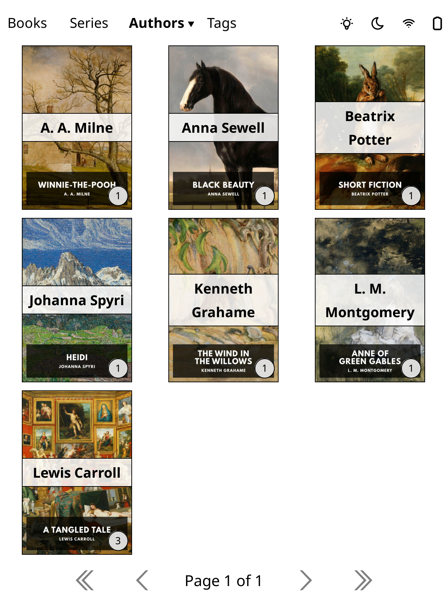
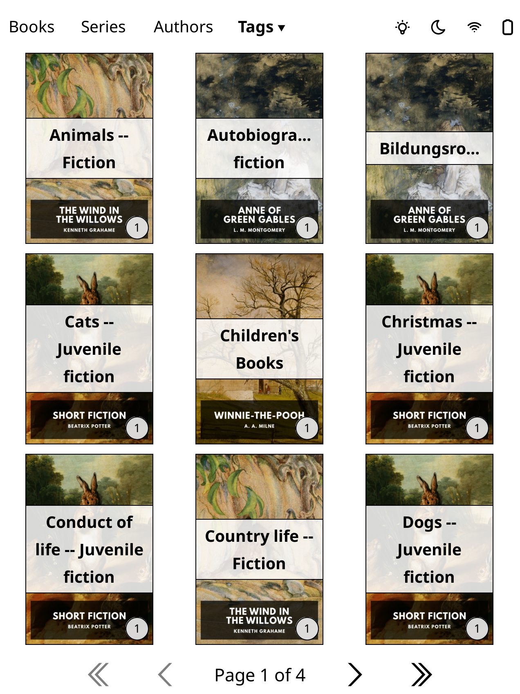
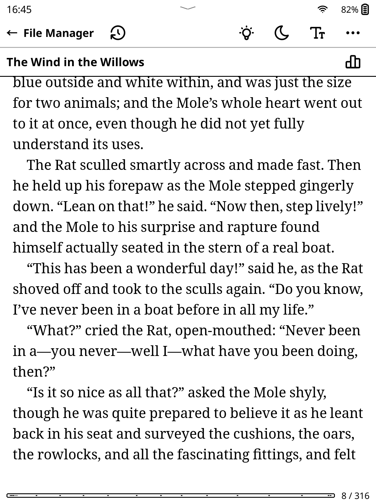
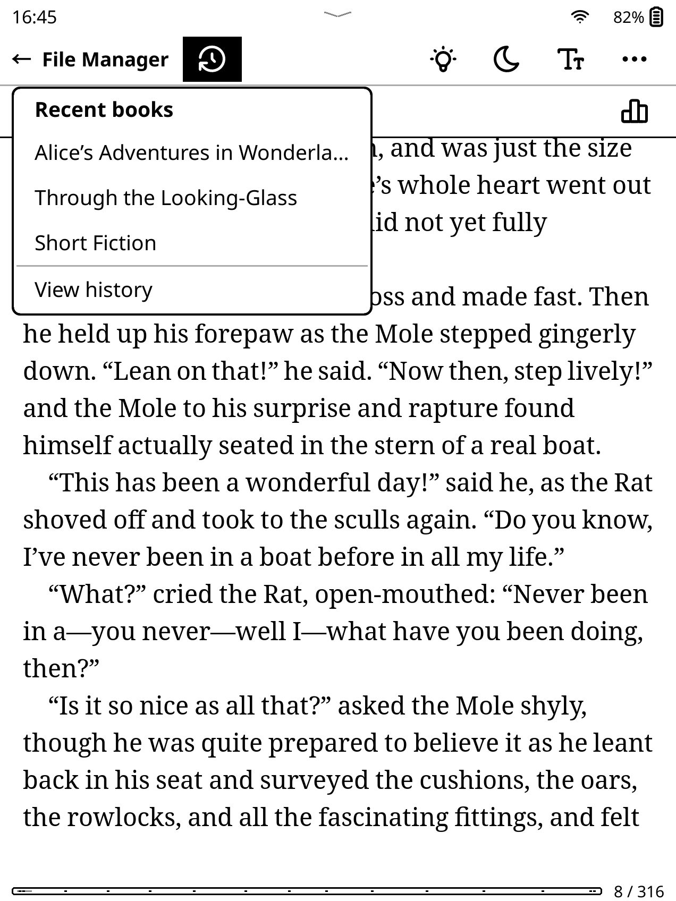
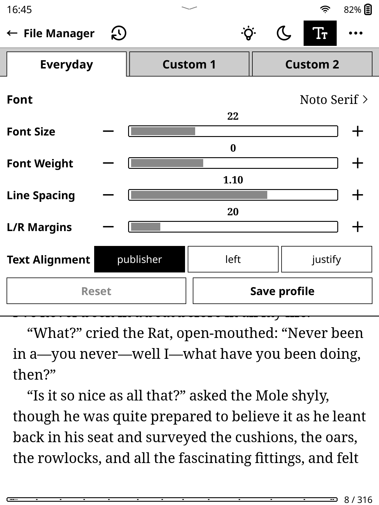
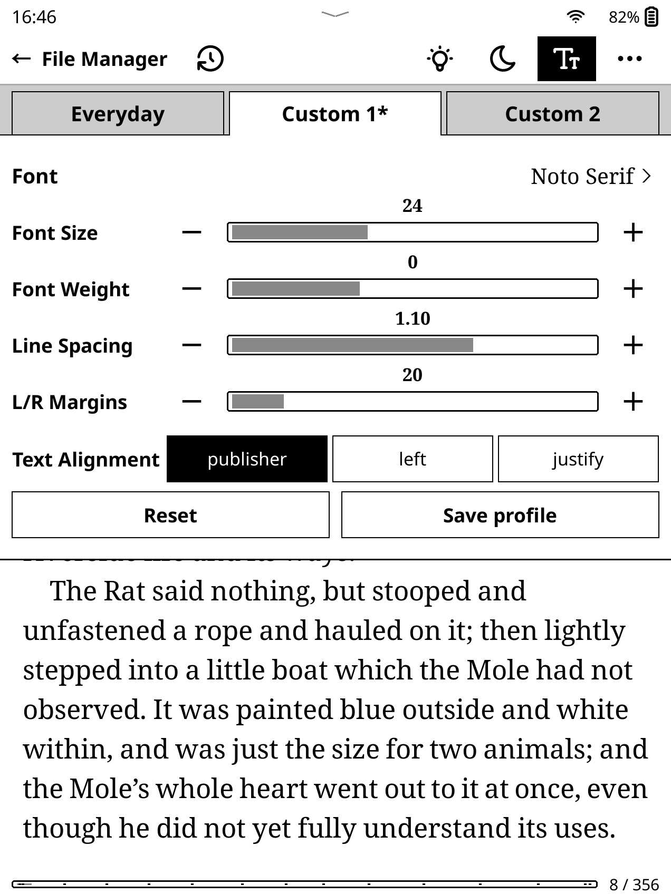
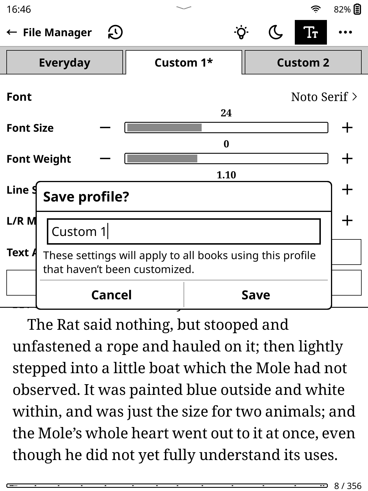
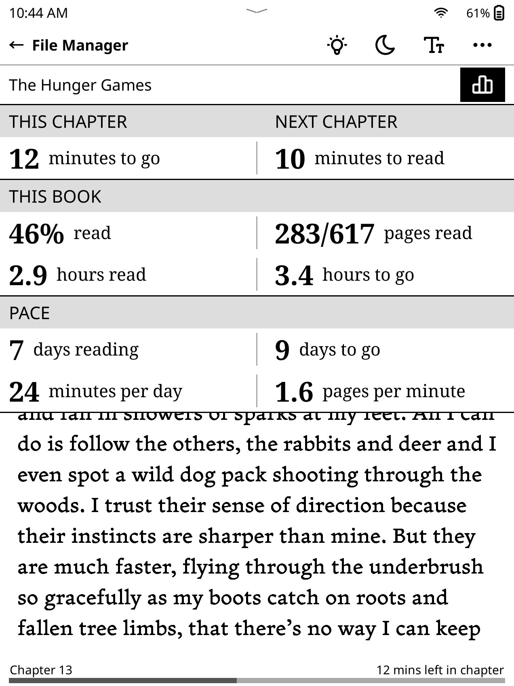
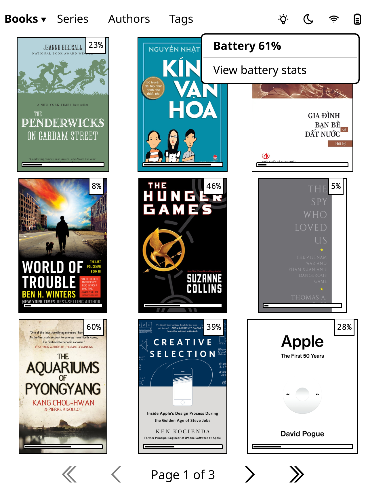

Plain UI user guide
A guide to the library and reading controls in Plain UI for KOReader. Select any screenshot to view it at full size.
- Swipe down while reading for reading tools.
- Swipe up from the bottom edge for navigation and page previews.
Get started
- Copy
plainui.koplugininto KOReader’spluginsfolder. - Enable KOReader’s CoverBrowser plugin and restart KOReader.
Formats. The reader controls support reflowable books and fixed-page documents, including PDFs. Typography profiles apply to reflowable books.
Your library
Browse Books, Series, Authors, and Tags in CoverBrowser’s Mosaic cover grid or Detailed list view.
- Filter & sort
- Tap the selected tab again. Choose All, Unread, Reading, or Finished. Sort Books by Last read, Title, or Progress; sort metadata groups by name or number of books. Books can also follow KOReader’s settings or exclude folders.
- Narrow the results
- Open a metadata group, then tap the heading above its books to add another author, series, or tag filter.
- Read the covers
- Badges show reading progress, finished status, group book counts, and series position where available.
Last read follows reading history, newest first. Books without history appear last.






Reading tools
Swipe down while reading to open the toolbar.
- Library & recent books
- File Manager returns to your library. The history icon beside it lists up to three other recent books; View history opens the full list.
- Font & stats
- Font opens typography. Reading stats beside the book title opens your reading overview.
- More
- Open book info, view the cover, look up a word, or disable the touchscreen. Progress upload/download and statistics sync appear when their KOReader plugins are configured.
After disabling touch, put your e-reader to sleep and wake it to restore touch. Follow the confirmation dialog’s page-turn instructions.
Tap outside the toolbar or swipe up to close it. The top chevron opens KOReader’s original menu.




Typography
Tap Font to adjust the typeface, size, weight, line spacing, margins, and alignment. Tap the font name to browse typeface previews.
Choose one of three profiles: Everyday, Custom 1, or Custom 2. Each book remembers its profile and adjustments automatically. An asterisk marks a customized profile.
- Reset
- Restore the selected profile’s saved settings for this book.
- Save profile
- Name and save the preset. Other books using it pick up the new settings when opened, unless customized. Saving Everyday also updates KOReader’s typography defaults.








Reading stats
The Reading stats popup shows chapter time remaining, next-chapter reading time, book progress, time spent and remaining, and your reading pace.
Tap a time value to switch between decimal hours and hours/minutes: 1.5 hours ↔ 1h30m.
Estimates depend on the reading history collected by KOReader’s Reading statistics plugin.


Device controls
These controls are available in the library and reader when supported by your device.
- Lighting & dark mode
- Open the native brightness dialog or toggle dark mode.
- Wi-Fi
- Tap the icon to turn Wi-Fi on/off or Choose network. Choosing a network turns Wi-Fi on when needed.
- Battery
- Tap the icon for its percentage. View battery stats appears when KOReader’s Battery statistics plugin is enabled.


Good to know
- Missing authors or tags?
- The metadata views use CoverBrowser’s cached book information. Extract/cache book metadata with CoverBrowser, then reopen the view.
- Need another KOReader setting?
- The edge chevrons open the native menus. For KOReader’s wider features, use its user guide.
Advanced: long-press shortcuts
- Books tab: open KOReader’s folder menu.
- Lighting icon: toggle the frontlight, in the library or reader.
- Typography profile tab: rename the profile without saving its settings.
Make cover badges larger
With KOReader closed, add this entry to the existing table in settings.reader.lua, then restart. The default size is 13.
["plainui_badge_font_size"] = 15,Moving from older user patches
Plain UI detects overlapping patches and leaves them in charge until removed. Remove the exact files named in its notice and restart KOReader to use the built-in versions.
2-author-series.lua2-filemanager-metadata-tabs.lua2-finished-badge.lua2-reading-percentage.lua2-reading-stats-popup.lua